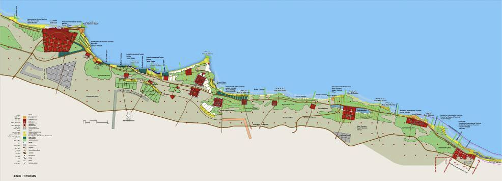
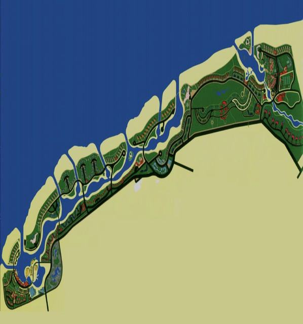
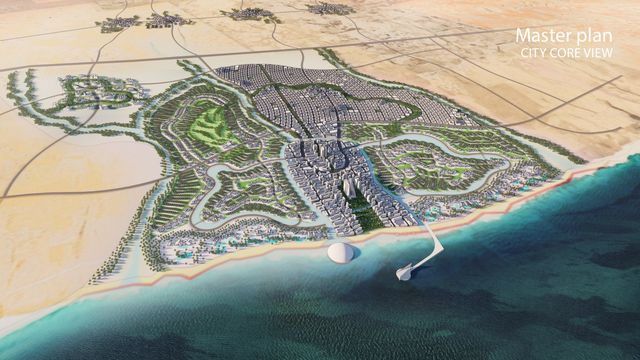
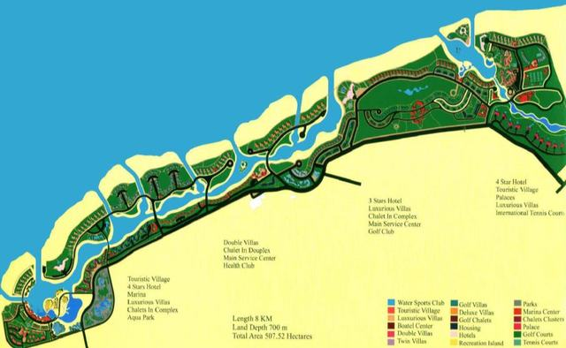

Regional Vision for the North Coast and Tourism Development Master Plan for Fuka-Matrouh
Regional plan · Fuka-Matrouh sub-region, North Coast, Egypt
Regional vision and tourism development master plan for the Fuka-Matrouh sub-region of Egypt's North Coast, for the Tourism Development Authority and the General Organization for Physical Planning.
Partners
WEP (Germany)think-GDC (Seattle)
Client

Tourism Development Authority / General Organization for Physical Planning
More from North Coast

Marina Matrouh Tourist CentreMarsa Matrouh, North Coast · 1994-2004 Marina El AlameinNorth Coast · 1985-1997
Marina El AlameinNorth Coast · 1985-1997 Ramla Concept Master PlanNorth Coast · 2023
Ramla Concept Master PlanNorth Coast · 2023
Gargoub New Port CityGargoub, Matrouh · 2021
Marina Matrouh Tourist Centre, Phase 3Marsa Matrouh, North Coast · 2004 Marina Matrouh Tourist Centre, Phase 2Marsa Matrouh, North Coast · 2000
Marina Matrouh Tourist Centre, Phase 2Marsa Matrouh, North Coast · 2000